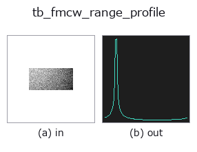

typed op• 資料種類:beatcube → signal
• 呼叫:fullseye.apply(img, "tb_fmcw_range_profile", a=0.5, b=0.5)(2-D 的模型是一張圖 + 兩個純量旋鈕 a,b∈[0,1])

*圖為在 128×128 合成輸入上實際執行的輸出。左為輸入，右為輸出。點雲以俯視散點顯示(亮度 = z)，一維序列為折線，體資料為沿 z 的最大值投影，影片為中間影格，複數影像為振幅；無法成像的回傳值直接顯示數值。*
*旋鈕 a 不改變輸出(實測: 0.1 / 0.5 / 0.9 相同)。*
*旋鈕 b 不改變輸出(實測: 0.1 / 0.5 / 0.9 相同)。*
階段(前置運算子 → 本運算子，由左至右):
▸ tb_fmcw_range_profile: stages (docs site)
換別的影像(合成場景 / 照片 / 硬幣。上排為輸入，下排為對應輸出。旋鈕取預設):
▸ tb_fmcw_range_profile: other inputs (docs site)
僅距離剖面：快時間 FFT 幅度，對其餘維度取平均。
> 以下的詳細說明為原文 —— 摘要與標題已翻譯。
The 1-D marginal of :func:range_doppler_map — what a static scene needs,
and what a single chirp can give. Magnitudes are averaged (never the complex
values) over chirps and antennas, so the average is independent of the
target's velocity and angle: `|FFT|` does not rotate with the Doppler
phase, only the phase does.
Bin `j is j * c*f_s/(2*S*N_s) metres. With normalize=True` a
bin-centred target of amplitude `a peaks at exactly a`.
*chirp* / *antenna* select one slice instead of averaging. Returns a 1-D
float64 array of length `n_samples — a plain signal, so :mod:dsp` and
:mod:funct1d (`find_peaks, smooth_funct_1d_gauss, spectrum`)
apply to it directly.
Raises `ValueError: as :func:range_doppler_map`, plus an
out-of-bounds *chirp* index.
Typed bridge of the rangedoppler op `fmcw_range_profile into the 2-D evolution registry: the same implementation, called under the op(v, a, b) convention. This op has no tunable parameter; a and b` are unused.
• 範例資料目錄(下載 URL / 授權) —— 2-D 用 skimage.data(BSD/公有領域)加合成圖,3-D 給出真實資料源(Stanford/PDS 等)的下載 URL。
• 運算子來歷與參考文獻 —— 該運算子族所依據的研究/方法出處。
下面的程式已確認可以執行(與圖相同的輸入)。在 Studio 說明中，此區塊會變成按鈕，可當場載入並執行。
img_to_beatcube 0.50 0.50 tb_fmcw_range_profile 0.50 0.50
▸ Load this pipeline · Load & run
下面的範例呼叫的是底層帳本運算子 fmcw_range_profile。此橋接運算子只是把同一實作適配為 fn(v, a, b) 慣例，行為完全相同(只是呼叫形式不同)。
• fmcw_range_doppler — py -3.11 examples/fmcw_range_doppler.py
signal 作為輸入)identity · tb_create_funct_1d_array · tb_smooth_funct_1d_gauss · tb_smooth_funct_1d_mean · tb_derivate_funct_1d · tb_integrate_funct_1d · tb_zero_crossings_funct_1d · tb_abs_funct_1d
typed)tb_points_to_voxel · tb_estimate_point_normals · tb_iss_keypoints · tb_angle_3points · tb_project_points · tb_render_point_depth · tb_statistical_outlier_removal · tb_radius_outlier_removal
*Provenance: ops.py — 2D 運算子登記表。本條目由 tools/opdocs.py md 自動產生(請勿手動編輯)。*
© 2026 Kazufumi Furuse — Fullseye operator documentation. Licensed under Apache-2.0.
{kind=link}
{kind=link}